Proposta de design
App do cidadão do Mapa de Relatos de Roubo, Av. Paulista, São Paulo
Quem anda pela Av. Paulista (Bela Vista, Cerqueira César e Consolação) não tem onde ver, de forma simples, onde e quando os roubos acontecem. O app junta o que a comunidade relata e mostra isso de volta.
Todos os dados do projeto são simulados. Nenhum dado pessoal real é usado. O mapa não substitui o boletim de ocorrência.
Vêm das regras do app (mobile/REGRAS.md) e valem para toda tela.
O arquivo original tinha ruído e pixels soltos. Refizemos em vetor a partir da grade de pixels (63 por 65), removendo 41 pixels soltos e sem acrescentar nenhum. A cor muda conforme o fundo, e o desenho não.
A rampa de marca parte do azul original da logo (#B0DCFC) e chega ao azul marinho. Os valores abaixo têm contraste calculado: 4,5 ou mais para texto comum.
O app usa papéis (fundo, superfície, texto, ação), e cada papel tem valor no claro e no escuro. As cores de risco não mudam com o tema do sistema, porque carregam significado.
SF Pro no iOS e Roboto no Android. É isso que faz o texto parecer nativo e respeitar o tamanho escolhido no aparelho.
| Papel | iOS | Android |
|---|---|---|
| Título da tela | Relatos34, negrito | Relatos28 |
| Título de seção | Risco por região22 | Risco por região22 |
| Título do cartão | Celular, Bela Vista17 | Celular, Bela Vista16 |
| Texto | Levaram meu celular17 | Levaram meu celular16 |
| Texto secundário | Ontem, 21h3515 | Ontem, 21h3514 |
| Legenda | Local aproximado13 | Local aproximado12 |
Alvo mínimo de 44 pt no iOS e 48 dp no Android. O ícone pode ser menor, mas a área de toque não, com pelo menos 8 de distância entre alvos.
Seis telas, três delas em abas. O botão de novo relato fica à mão no mapa e na lista.
Apelido e RM. O app lembra e pula a tela ao reabrir.
Navegação principal, sempre à vista.
Todos os campos do relato, sem endereço exato nem dados de pessoas.
Tipo, descrição curta, quando e onde. A localização do celular preenche o campo "Onde". Se a permissão for negada, a pessoa escolhe o local no mapa.
O relato fica salvo no aparelho como "Aguardando envio" e sai sozinho quando a rede volta.
"Relato enviado. Ele aparece no mapa depois da moderação."
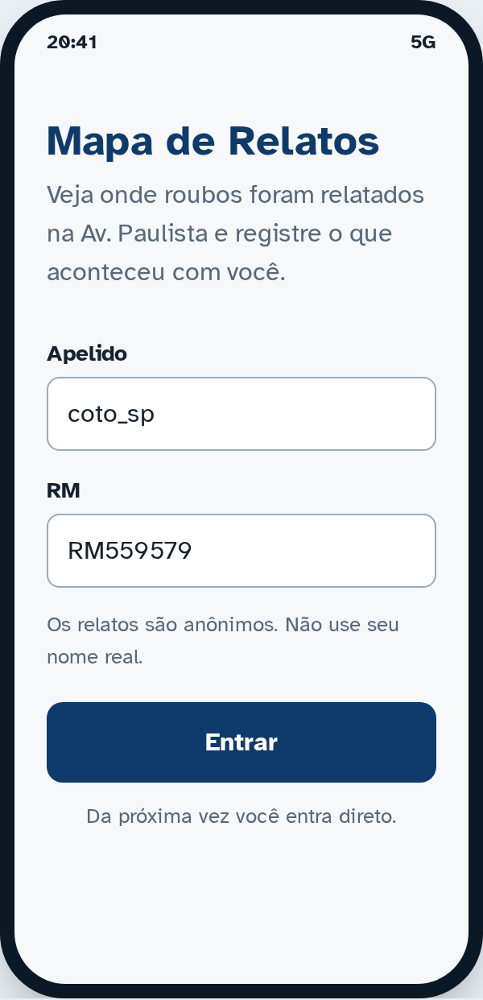
Apelido e RM, lembrados ao reabrir.
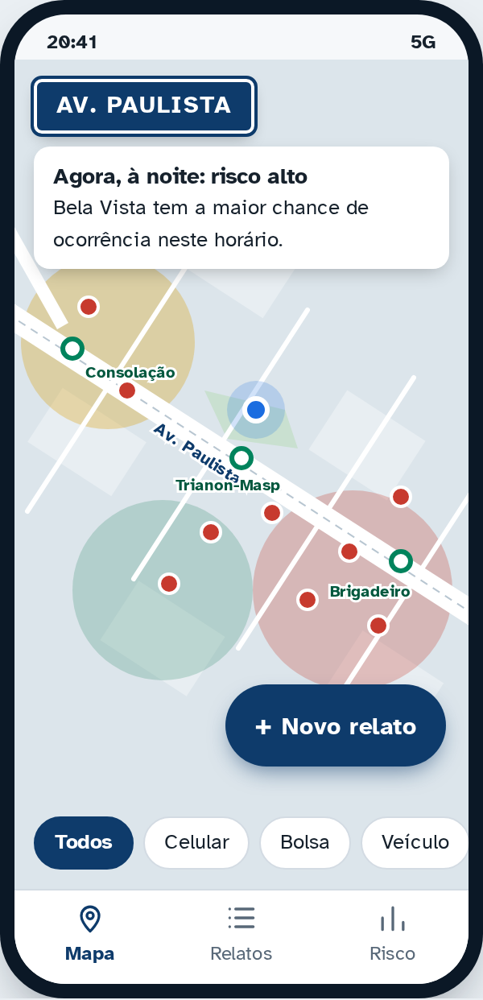
Pinos dos relatos, cor por risco e aviso do horário.
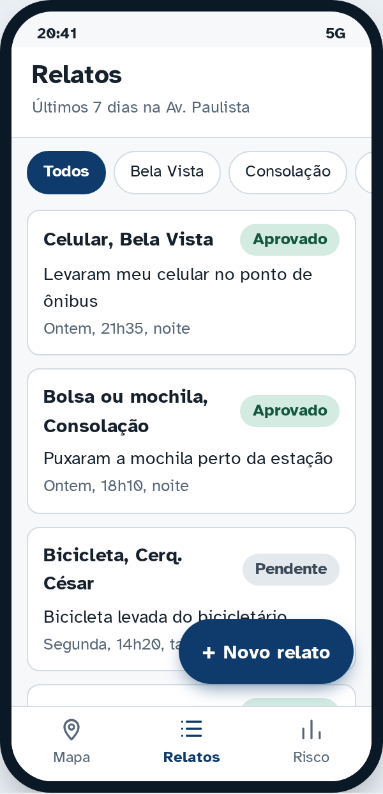
Filtro por bairro e estado de cada relato.
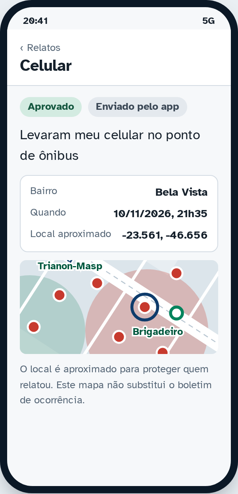
Campos do relato e mapa com local aproximado.
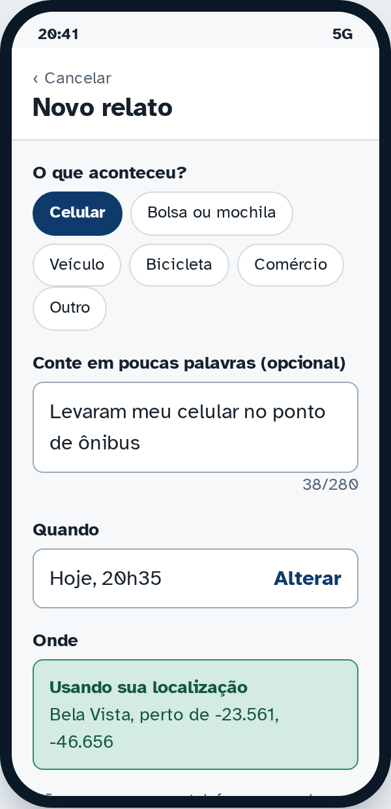
Tipo, descrição, quando e onde.
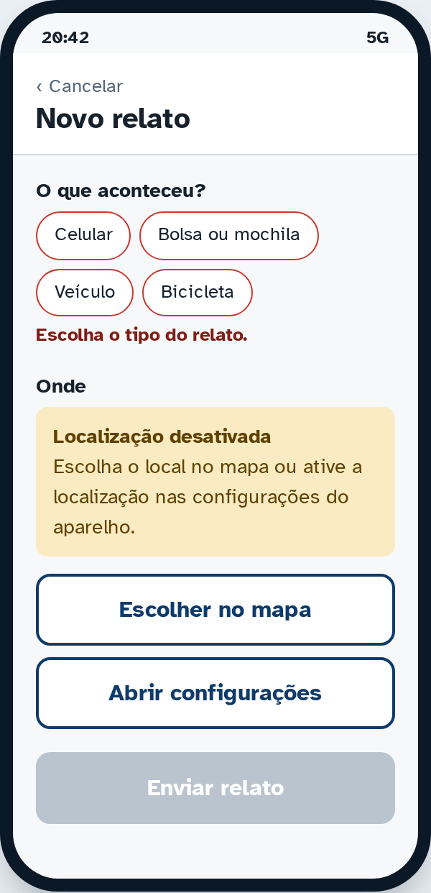
Diz o que falta e oferece outro caminho.
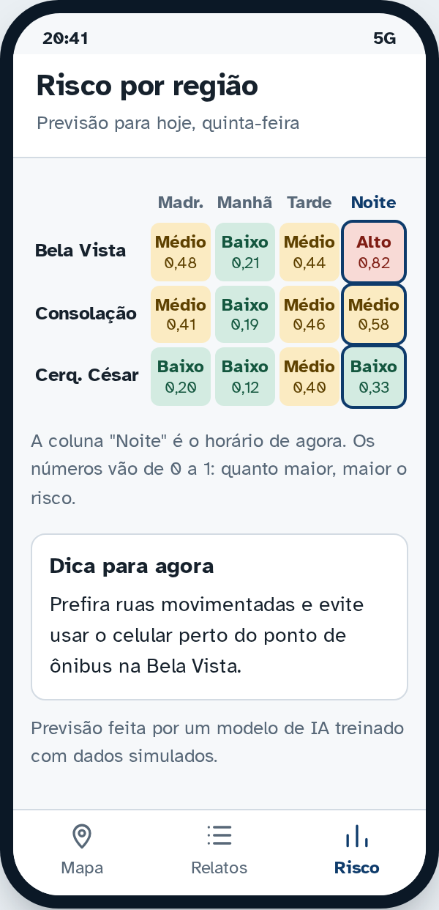
Bairro por faixa horária, com o horário atual destacado.
Cada erro explica o que fazer ("Escolha o tipo do relato", "O RM tem 6 números depois de RM"), sem pedir desculpas nem culpar a pessoa.
É o recurso nativo do app. Com permissão negada, o botão enviar continua possível: escolher o local no mapa ou abrir as configurações.
A previsão vem do modelo de IA via GET /api/previsoes. A coluna "Noite" aparece destacada porque é o horário de agora.
À esquerda, iOS com Liquid Glass. À direita, Android com Material 3. O vidro aqui é uma aproximação em CSS: no app, vem do sistema.
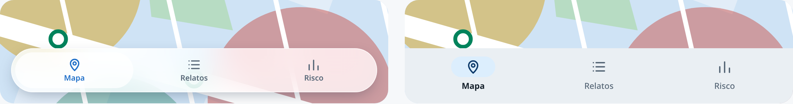
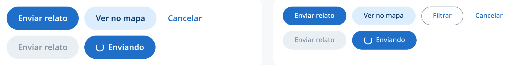
Cada efeito nativo tem plano B. Antes de adotar, testar no Expo Go de verdade: a documentação diz que funciona, mas guias da comunidade divergem.
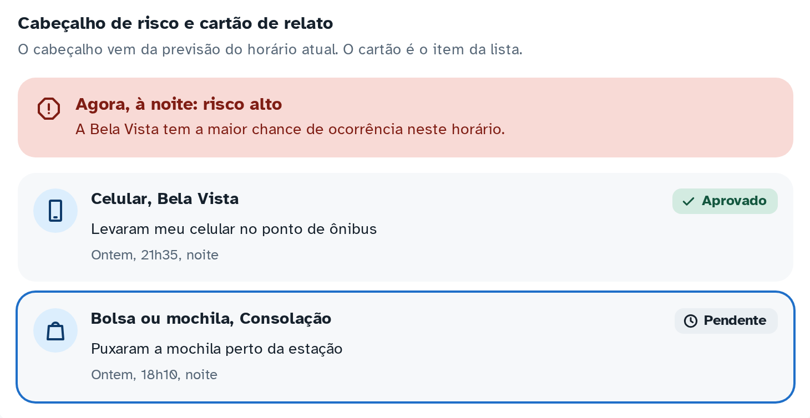
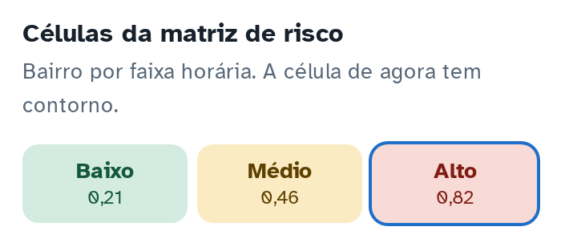
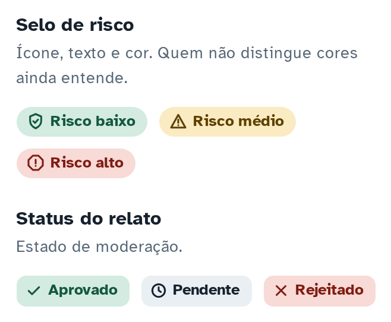
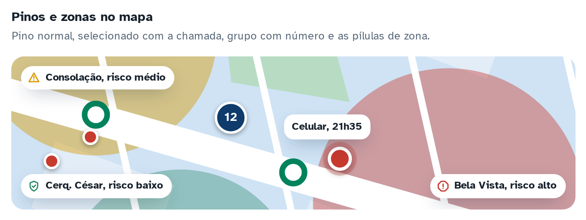
ETag para não baixar o que não mudou.Idempotency-Key no POST /api/relatos, para não duplicar relato ao repetir.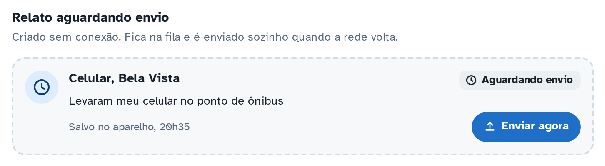
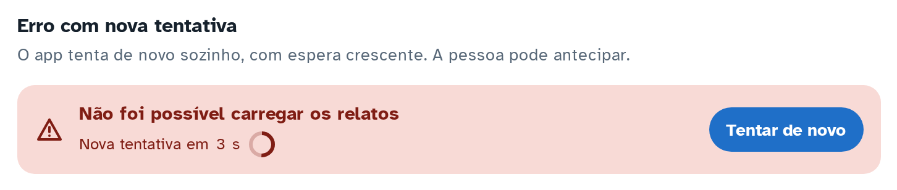
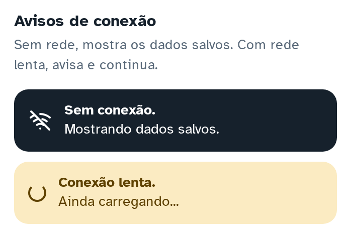
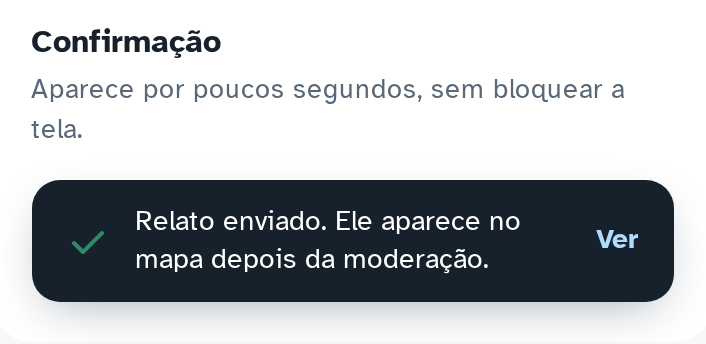
| Token | Valor | Uso |
|---|---|---|
dur-fast | 120 ms | Pressionar, trocar seleção |
dur-base | 220 ms | Avisos, troca de cor de um selo |
dur-slow | 360 ms | Folha inferior, mudança de tela |
ease-standard | .2, 0, 0, 1 | Quase tudo |
ease-spring | .34, 1.56, .64, 1 | Folha e confirmações |
Retorno tátil leve ao selecionar, de sucesso ao enviar o relato e de aviso quando a validação falha. Com "reduzir movimento" ativo, o tempo vira zero e o conteúdo continua.
Fonte: repositório awesome-design-md, com arquivos DESIGN.md de marcas conhecidas. São arquivos de sites, então servem de referência de cor, tipografia e tom, não de componente nativo. Lemos os resumos de Apple e Uber. Do Airbnb só a descrição geral.
Wise, Revolut e Spotify estão na lista de próximos estudos, ainda não lidos.
Três telas ou mais com navegação, lista com carregando, erro e vazio, formulário validado que cria um relato e identificação lembrada ao reabrir.
Modo estrito, sem any, tipos em Relato, PrevisaoRisco, rotas e respostas, e tsc --noEmit limpo.
Localização preenchendo o relato, com a permissão negada tratada. O app é nativo, sem WebView.
Camada services/, validação em funções puras, README.md com a Ficha da CitizenTech e DECISOES.md.
ZIP da pasta do app sem node_modules, README, DECISOES.md, array authors com nome e RM de todos no package.json e vídeo de demonstração de até 2 minutos.
É a ideia original (mapa interativo), mas está como proposta. Precisa da confirmação do time. Testar react-native-maps no Expo Go cedo.
O app em C# não usa a API, então ninguém aprova os relatos. Decidir se o C# chama a API, se o app mostra os pendentes ou se fica só na narrativa.
Vidro do iOS 26 e componentes do Material 3 podem exigir development build. Se exigirem, entra o plano B.
Paginação, ETag e chave de idempotência mudam o contrato. Combinar com o João antes.
Com 3 bairros e 4 faixas há só 12 combinações. Zonas mais finas deixam o mapa e a previsão mais úteis.
A rampa de marca e a recoloração da logo são propostas. O time pode trocar a cor no tokens.css.
Calendário proposto, dentro dos prazos internos do projeto.
IA entrega o CSV simulado. João passa as rotas da API rodando local. Confirmar tela de mapa e moderação.
Criar o projeto Expo com tema (tokens), navegação, identificação e services/ com dados de mentira.
Lista, detalhe, novo relato com localização, risco por região e estados de rede.
Cada parte funcionando sozinha. tsc --noEmit limpo.
App mostrando o risco da API no IIS. Vídeo de 2 min gravado.
Envio no Teams até 23h55.
Material de apoio no repositório: mobile/mockup/ (telas, fundamentos e componentes), mobile/assets/brand/ (logo) e mobile/REGRAS.md.